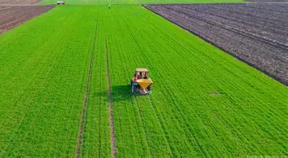
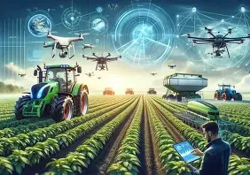
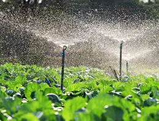
Empowering farmers with modern technology and sustainable practices for a greener tomorrow.
Join a community of over 50,000 farmers utilizing our data-driven insights to maximize yield and minimize environmental impact. We provide everything from satellite crop monitoring to automated irrigation systems.
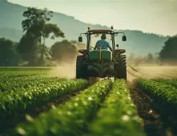
We are revolutionizing the farming industry by integrating state-of-the-art AI, IoT sensors, and drone analytics. Our mission is to empower local farmers and global agricultural enterprises to yield more with less, preserving natural resources for future generations.
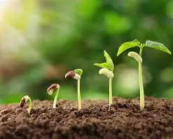
Comprehensive solutions tailored for modern agricultural demands.
Get precise bird's-eye insights on crop health, growth patterns, and irrigation needs using our autonomous drone fleet.
Automated IoT moisture sensors and nutrient trackers that deliver real-time soil data directly to your mobile dashboard.
Predict harvests months in advance with our machine learning models trained on historical and climatic variables.
Monetize your sustainable practices by generating carbon credits. We help you track and verify your farm's carbon sequestration.
Upgrade your fleet with AI‑driven autonomous tractors and harvesters that work 24/7, optimizing field operations and reducing labor costs while maintaining precision.
Connect directly to global markets and distributors through our transparent blockchain-based trading network.
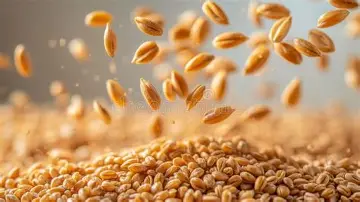
About: A widely cultivated cereal grain, essential for global food security. Our premium wheat is grown using sustainable practices.
Benefit: Rich in carbohydrates, fiber, and essential nutrients. Promotes healthy digestion and provides long-lasting energy.
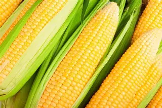
About: High-yield organic corn cultivated without synthetic pesticides. A versatile crop used for food, feed, and fuel.
Benefit: Excellent source of antioxidants, vitamins, and minerals. Supports eye health and provides essential dietary fiber.
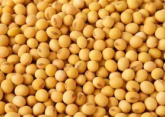
About: A globally significant legume packed with plant-based protein. Grown utilizing advanced precision farming techniques.
Benefit: High in protein, heart-healthy fats, and essential amino acids. Supports muscle growth and overall cardiovascular health.
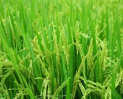
About: A primary staple food for over half the world's population, grown in flooded paddies with efficient water management.
Benefit: A great source of complex carbohydrates and B vitamins, providing sustained energy and supporting nervous system health.
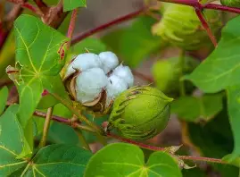
About: A soft, fluffy staple fiber that grows in a boll around the seeds, essential for the global textile industry.
Benefit: A breathable and durable natural fiber used in eco-friendly clothing, reducing reliance on synthetic materials.
About: A bright yellow flower cultivated for its edible seeds and versatile oil, often used in crop rotation strategies.
Benefit: Sunflower seeds and oil are rich in Vitamin E and healthy fats, promoting skin health and reducing inflammation.
We combine decades of agricultural expertise with cutting-edge technology to deliver results that matter — for your farm and for the planet.
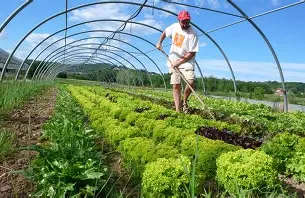
Sunny, Humidity: 45%
Perfect day for harvesting!
We combine technology and expertise to empower farmers worldwide.
Years of Innovation
We are revolutionizing the farming industry by integrating state-of-the-art AI, IoT sensors, and drone analytics. Our mission is to empower local farmers and global agricultural enterprises to yield more with less, preserving natural resources for future generations.
Our smart farming process from sensor installation to yield improvement.
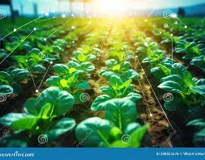
"Since partnering with them, our crop yield has increased by 40% and water usage dropped significantly."
Read about how our latest drone surveillance is helping farmers detect crop diseases early. Read More...
Smart Farming represents the application of modern Information and Communication Technologies (ICT) into agriculture. It includes IoT sensors, automated drone spraying, and real-time AI weather forecast analysis to optimize crop yields.
Our custom hardware devices transmit data using low-power wide-area networks (LPWAN) like LoRaWAN, cellular IoT connectivity, or local Wi-Fi links, meaning you get secure connectivity even in remote regions.
Absolutely! Our analytical recommendations align completely with organic agricultural practices. The sensors do not alter the soil composition and aid organic farmers in maintaining soil microbiome health.